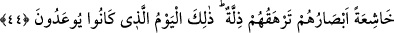

“Nusub”, dikilen ve Allah Teâlâ dışında kendisine tapılan her şeydir. İbn Ömer
(r.a.)’dan rivâyete göre “nusub”, avın takıldığı ağdır ki sâhibi ona doğru koşar.
“Ensâb” kelimesinin tekilidir. Nitekim nusub kelimesi Kur’ân-ı Kerîm’de başka bir
âyette şöyle yer alır: “...dikili taşlar (putlar) üzerine boğazlanmış hayvanlar ve fal
oklarıyla kısmet aramanız size haram kılındı.” (el-Mâide, 5/3). Arapların kendisine
taptıkları ve üzerinde hayvan boğazladıkları taşlar vardı.
Ahfeş, “nasb” kelimesinin çoğulu olduğunu söyler, “rehn” ve “rühûn” gibi, “ensâb”
da cem’u’l-cem yâni çoğulun çoğuludur.
“Koşuyorlar” kelimesi “îfâz/acele etmek” kökünden gelir. Aslı müteaddî bir fiildir,
yâni “onu önce hangisi selamlayacak diye koşuyorlar” demektir. Bu ifâdede “câhilî
hâlleri sebebiyle müşrikleri ayıplama ve cehâletlerini zikrederek onları hafife alma”
söz konusudur. Çünkü onlar bu cehâletleriyle, hiçbir fayda ve zarar veremeyen şeylere
koşmayı âdet edinmişlerdir.
44. Gözleri horluktan aşağı düşmüş ve kendileri zillete bürünmüş bir hâlde. İşte
bu, onların tehdîd edilegeldikleri gündür!
“Gözleri horluktan aşağı düşmüş vaziyette” ifâdesi, “koşuyorlar” fiilinin fâilinin
hâlini bildirmektedir, “Gözleri” kelimesi de mecâz-ı isnâdî yoluyla onun fâilidir. Yâni
burada “huşû” yâni korku, insanın bütün benliği ile hissettiği bir vâkıa iken bunun âyette
sâdece göze isnâd edilmesi, tesir ve eserinin insanın gözünde ortaya çıkmasından
dolayıdır. Buna göre âyetin mânâsı; onların gözleri zelil ve aşağı düşmüştür, azapla
karşılaşmayı bekledikleri için başlarını kaldıramazlar.
“Kendilerini zillet kaplamış bir hâlde” ifâdesi de yine “koşuyorlar” fiilinin fâilinin
hâlini bildirmektedir. Yâni onları şiddetli bir zillet kaplamış ve büyük bir alçaklık,
hakîrlik ve düşkünlük bürümüş olduğu hâlde koşarlar.
“İşte bu”, dünyada iken peygamberlerin dilleri ile “vaîd/tehdid edilegeldikleri”,
onların da yalanladıkları, kendisinde korkunç hâdiselerin meydana geleceği “gündür.”
Vaîd kelimesinin tekrar olduğu vehmine kapılmamalıdır. Çünkü daha evvel zikredilen
“vaîd”, o an ve devamlı yapılan bir tehdid iken, bu âyetteki vaîdin geçmişe âid olduğu
başındaki “kâne” fiilinin delâletiyle anlaşılmaktadır.
Âyette yer alan “zillet” kelimesi enâniyetin zilletine işâret etmektedir. Çünkü kâfirler
kabirlerinden çıktıkları gün, bâtınî hâllerine münâsip olan sûretlere doğru
koşacaklardır. Enâniyet/benlik sâhibi olan kimseler, en çirkin sûretlerde olacaklardır.
Çünkü içleri ve dışları değişime uğrayacaktır. Nitekim, “ben ondan daha üstünüm.”
(el-A’raf, 7/12) dediği zaman aynı şey iblisin de başına gelmişti. Nasıl ki İblis
kurb/yakınlık makamından kovulmuş ve uzaklık zilleti kendisini kuşatmış ise onun gibi